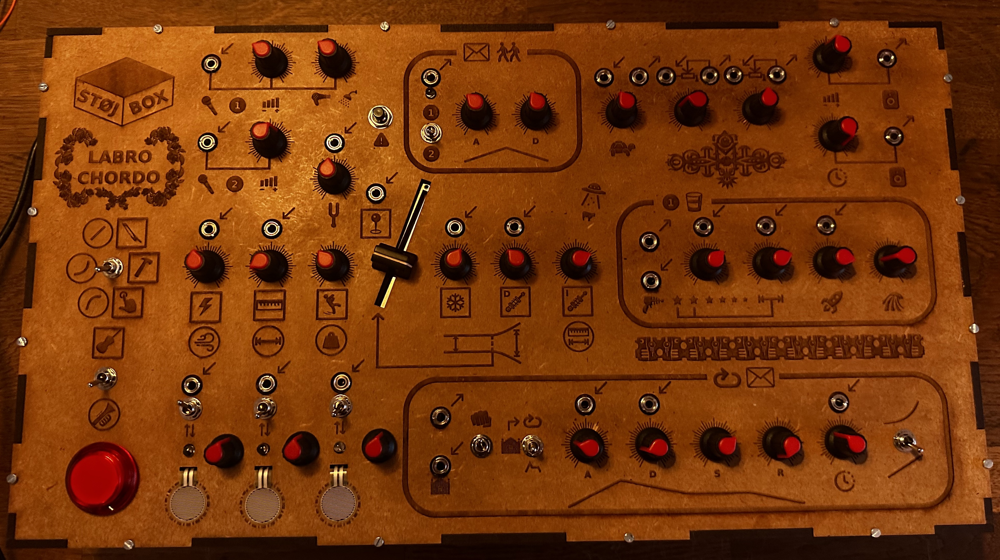
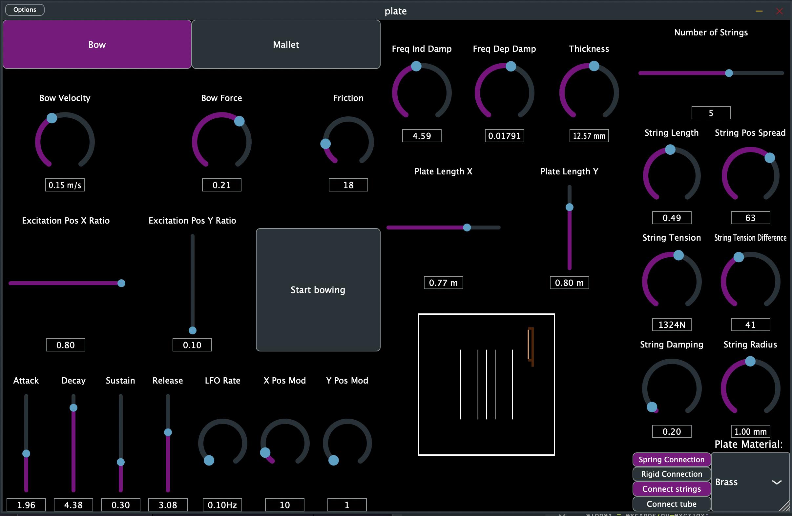
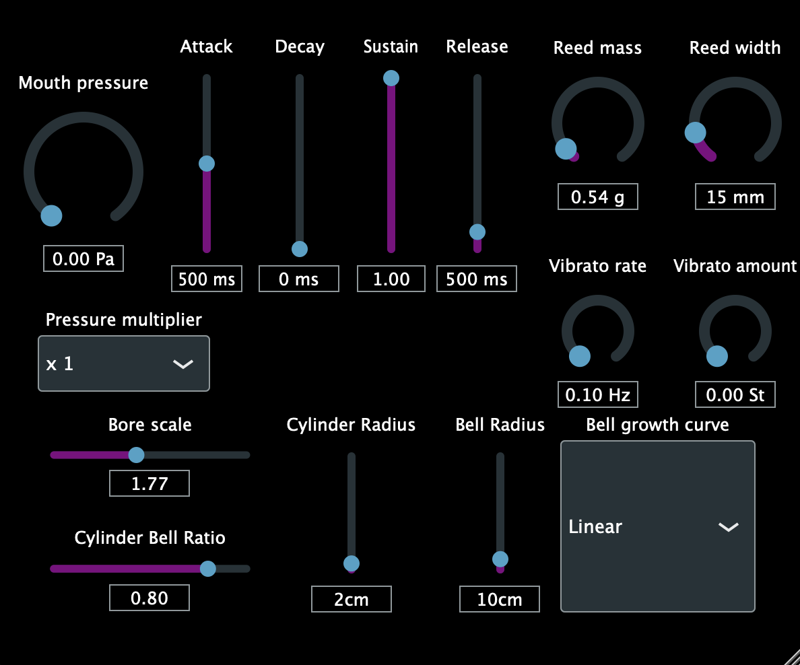
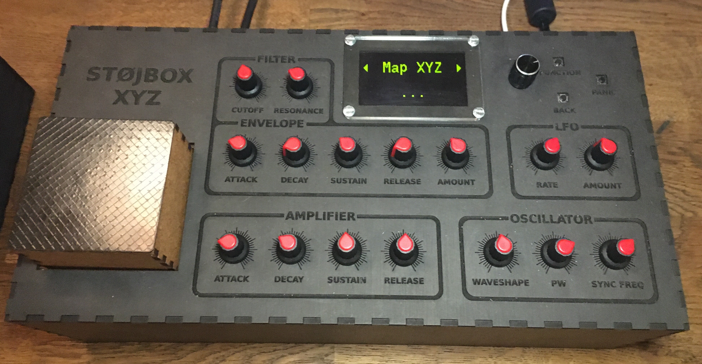
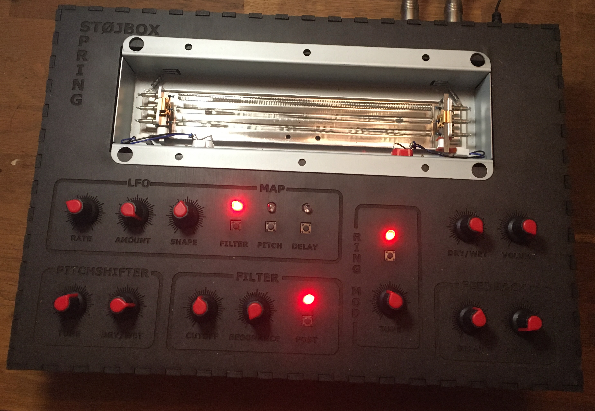
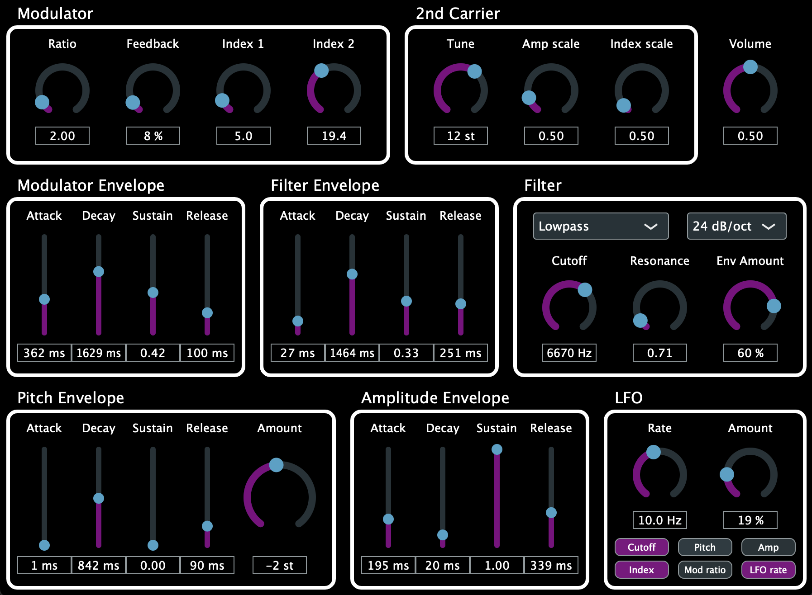

A modular synthesizer that utilizes physical modelling synthesis. The physical models are based on finite-difference time domain (FDTD) methods and consist of a damped stiff string and an acoustic tube. Several exciters including a bow, strike, pluck and lip reed have also been implemented. Furthermore, a dynamic grid has been utilized, which allows for smooth variations of the defining physical properties of the models. the physical models was implemented in real-time on the Bela platform using C++. A video presentation of the synthesizer can be seen here. My master thesis describing the development of the synthesizer can be found here.


A physical modeled modular system that utilizes finite-difference time-domain (FDTD) methods and consist of a thin plate that can have strings and/or a tube attached using rigid or spring connections. The user can interact with the physical model by exciting the plate with either a bow, hammer or external audio. The interface allows for experimentation allowing the user to change a wide variety of parameters. The plug-in was implemented in real-time using the JUCE framework for C++. A video presentation of the plug-in can be seen here.

A polyphonic physical modeled wind instrument plug-in. The physical model was implemented using finite-difference time-domain methods in order to approximate the physical behavior of wind instruments. The plug-in was implemented in real-time using the JUCE framework for C++. While the implemented plug-in is capable of simulating real wind instruments, it is more aimed towards sonic experimentation. This experimental approach was achieved by giving the user control over physical parameters such as the shape of the acoustic tube, as well as the width and mass of the reed. These parameters can be used to create somewhat realistic wind instruments, but also unconventional wind instruments and wind instruments that would otherwise be impossible to play. A video presentation of the plug-in can be seen here.

A desktop synthesizer with an interface that features an XYZ controller, allowing users to simultaneously control multiple sound parameters by moving fingers in the X-, Y- and Z-directions. It also includes a menu system that can be navigated using an encoder and push buttons, allowing the aforementioned XYZ controller to be dynamically mapped to the sound parameters. The menu system also features a modulation section, control over effects (reverb, chorus and overdrive) and provides access to a pitch envelope. The processor used in the desktop synthesizer is the Daisy Seed by Electro-Smith, which was programmed using C++. A video presentation of Støjbox XYZ can be seen here.

A feedback instrument that extends on the spring reverb effect by allowing the output of the spring reverb tank to be fed back in to the input of the spring reverb tank. The level of feedback can be adjusted, as well as the delay length. When increasing the amount of feedback, the spring reverb will eventually start to self oscillate, and thus create a reverb with an infinite decay time. The instrument allows for the possibility to animate the reverb, augmenting it by applying effects to the feedback path. These effects includes a pitch shifter, a ring modulator, and a low-pass filter, which can be added to either the feedback path or the output of the spring reverb tank. The instrument also includes an LFO with amount, speed and shape controls, which can be mapped to one or multiple parameters. The instrument can be used as a standalone feedback instrument, but also offers the possibility to be used as an insert effect. A video presentation of Støjbox Spring can be seen here.

A polyphonic FM synthesizer plugin. The architecture of the FM synthesizer includes a modulator oscillator with feedback, and two carrier oscillators. It has a filter section with three filter types and two slopes available to the user. It also includes an LFO and four ADSR envelopes for the amplitude, the modulation index, the filter cutoff and the pitch. The synthesizer is implemented using the JUCE framework for C++.

The Støjglove is a wearable instrument that utilises two piezoelectric sensors attached to the index and middle finger of a glove. The sound of Støjglove is based on modal synthesis with the output from the two piezoelectric sensors acting as exciters for two modal resonators with the user being able to alter the tuning and bandwidth of the resonators through a control panel. A video presentation of Støjglove can be seen here.